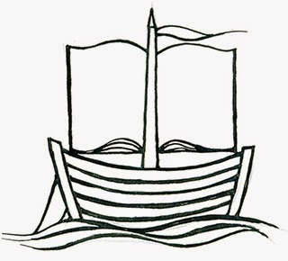
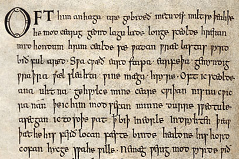
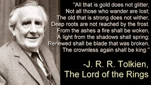

 |
| My visit was connected to the 2014 Felixstowe Book Festival |
{kind=link}
Some
months ago I was asked to work with some nine and ten year old
‘reluctant writers’ who were also doing an Anglo-Saxon history
project. Could I help them use writing to enter imaginatively into
the Anglo-Saxon world?
My
heart leapt! Decades ago, when I was at university, I’d been lucky
enough to enrol on an immensely old-fashioned English literature
degree. We started at the beginning, somewhere around the late 7th
century, and spent the next three years thundering on
chronologically, until we collapsed exhausted somewhere between the
First and Second World Wars. This was in the 1970s so we were only a
generation or two from home. Many of us felt a little apprehensive
when we were instructed to purchase our copies of the most recent
edition of Sweet’s Anglo-Saxon Reader – initially published in
1876 when it was shockingly modern even to consider English
literature as a subject for study. Our nervousness deepened at the
first sight of these unfamiliar looking texts with their aescs and
thorns and (much worse) their inflections and agreements and genders.
A stiff course of A level Latin gave me some initial confidence but I can still recall
approaching the first sessions anticipating hours of cerebral sweat
for some essentially arid reward.
 |
| The page from the Exeter Book. This shows the opening of the poem 'The Wanderer' |
{kind=link}
How
wrong I was! Once a few spelling conventions and vowel shifts had
been understood it was startlingly apparent that this was my native
language. Yes, there was all the scary stuff of strong and weak verbs
and alternative ways of forming plurals or writing in the past tense
but the core words were the core words of today: earth, sea, sun,
moon, man, woman, son, daughter, house, ship, sleep, wake, time,
love, laughter, night and day. These are all Old English words. I remember feeling
quite resentful at the way that Latin had so dominated my language
education until that moment.
Whilst
most of our undergraduate curriculum was general and compulsory there were moments
when specialisation was allowed. I seized my chances to spend more
time with this literature. Why did I love it so much? The excitement
of understanding, the mix of similarity and difference? Old English
poetry worked on a completely different construction principle
(stress and alliteration) from anything I’d previously encountered;
Old English prose (I’m thinking of the Anglo-Saxon Chronicle here) conveyed actual voices recording the events of their time, in my country. Suddenly
there was a glimpse of an unknown era which was developing its own
distinctive law and culture. A time when language was first making
literature and when the unwritten words of poets and story-tellers
could gather people together as effectively as light and warmth on
the long cold nights.
 |
| Most of the children remembered the riddle competition between Gollum and Bilbo in the Hobbit |
{kind=link}
So
that was all well and good, but it had been almost forty years since
I’d closed my Sweet. How was I to turn this into a morning’s
activity for thirty ‘reluctant’ Year Fives? Actually it wasn’t
hard. The Anglo-Saxons had loved riddles and so did the children –
encouraged by the master populariser, JRR Tolkien. They also enjoyed extending their language by the creation of kennings ('Word-hoard' is a kenning. It's a condensed metaphor and in this case means language. It could equally mean dictionary or vocabulary.) The class enjoyed that too and it wasn’t long before we were all (teachers included) writing balanced, alliterative poems of our own and gathering at night in the hall of Heorot to eat
and drink together. Would the unexpected visitor at the door be a monster come to tear one of us away, an exile seeking shelter or a
wandering minstrel offering us news and entertainment?
{kind=link}
It
wasn’t long afterwards that I realised that the deadline for the
submission of short stories for the AE Anthology was almost on me. Regular
visitors to this blogsite may have noticed that I have been
preoccupied with matters pertaining to dementia over the last few
months. One of the rather dismissive (and inaccurate) descriptions
sometimes applied to people with dementia who habitually get lost on
journeys that appear inexplicable,
is ‘wanderer’. It’s an Old English word of course and the OED
records its first written appearance as being in King Alfred’s
translation of Boethius from the later ninth century.
Where the word does NOT appear is in the famous and beautiful Anglo-Saxon lyric fragment that has
become known as ‘The Wanderer’. The protagonist here is an
‘an-haga’ (lone-dweller), he is an 'eard-stapa' (earth-stepper) and
crucially he is ‘werig-mod’ (weary in heart and mind) as he
‘wadan wraeclastas’ (travels the paths of exile). Anyone who has
observed a friend or relative lost in their own mind and increasingly
exiled from their identity – particularly that part of it which
depends on language – will understand how that thousand year old
poem might continue to resonate today.
{kind=link}
The
Old English 'Wanderer' can be found in the tenth century Exeter Book (see above).
My story of the same name will appear in the AE collection A Flash in the Pen (to be published 21.6.2015). I'm also looking forward to being part of the 2015 Felixstowe Book Festival a few days later.
{kind=link}